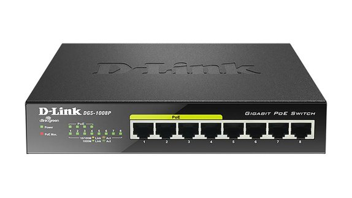
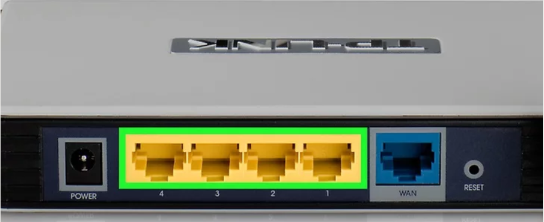
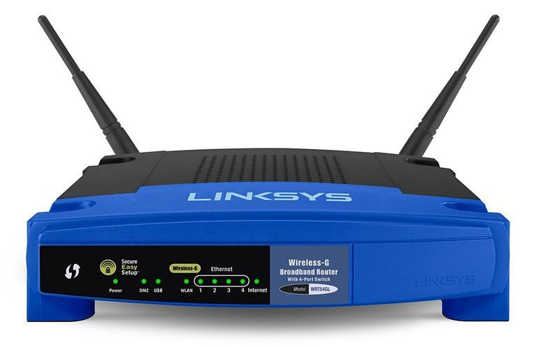

Datacommunicatie en netwerken
Bachelor in de elektromechanica – automatisering
Tom Demets | Stefan Lievens
tom.demets@hogent.be | stefan.lievens@hogent.be


Bachelor in de elektromechanica – automatisering
Tom Demets | Stefan Lievens
tom.demets@hogent.be | stefan.lievens@hogent.be




